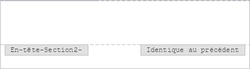

Insérer des en-têtes et des pieds de page
Pour ajouter ou supprimer un nouvel en-tête/pied de page ou pour modifier un en-tête/pied de page existant dans l'éditeur de documents,
- Passez à l'onglet Insertion de la barre d'outils supérieure.
- Cliquez surL'icône En-tête/Pied de page dans la barre d'outils supérieure.
- Sélectionnez l'une des options suivantes:
- Modifier l'en-tête pour insérer ou modifier le texte de l'en-tête.
- Modifier le pied de page pour insérer ou modifier le texte du pied de page.
- Supprimer l'en-tête pour supprimer un en-tête.
- Supprimer le pied de page pour supprimer un pied de page.
- L'icône En-tête/pied de page dans la barre d'outils supérieure.
Vous pouvez également double-cliquer sur la zone de la marge supérieure ou inférieure de la page ou cliquez avec le bouton droit sur cette zone et sélectionnez l'une des options disponibles Modifier l'en-tête ou Modifier le pied de page pour saisir du texte ou pour modifier le texte existant et configurer les paramètres des en-têtes et pieds de page.
- Les paramètres suivantes sont disponibles:

- Configurez la numérotation des pages utilisant le bouton Numéro de page.
- Insérer la date et l'heure.
- Insérer des codes de champ utilisant le bouton Champ.
- Insérer des images utilisant le bouton Image.
- Configurez l'emplacement de l'en-tête ou le pied de page en saisissant manuellement l'espacement dans les champs En-tête à partir du haut et Pied de page à partir du bas.
- Utilisez l'option Pages paires et impaires différentes pour ajouter un en-tête/pied de page différent pour les pages paires et impaires.
- Cochez la case Première page différente pour appliquer un en-tête ou un pied de page différent à toute première page ou au cas où vous ne voulez y ajouter du tout d'en-tête ou pied de page.
- L'option Lier au précédent est disponible si vous avez déjà ajouté des sections dans votre document. Sinon, elle sera grisée. En outre, cette option n'est pas disponible pour la toute première section (c'est-à-dire lorsque l'en-tête ou le pied de page de la première section est sélectionné). Par défaut, cette option est activée afin que les mêmes en-têtes/pieds de pages soient appliqués à toutes les sections. Si vous sélectionnez une zone d'en-tête ou de pied de page, vous verrez que cette zone est marquée par l'étiquette Identique au précédent. Désactivez l'option Lier au précédent pour utiliser des en-têtes et des pieds de page différents pour chaque section du document. L'étiquette Identique au précédent ne sera plus affichée.

Pour passer au corps du document, double-cliquez la zone de travail. Le texte de l'en-tête ou du pied de page est grisé.